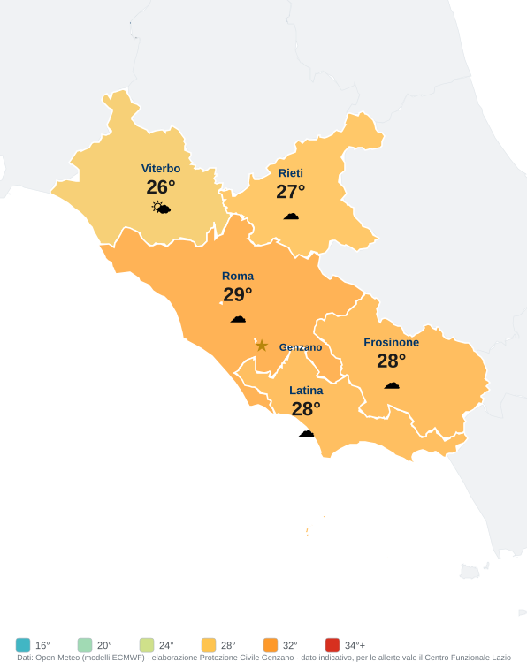
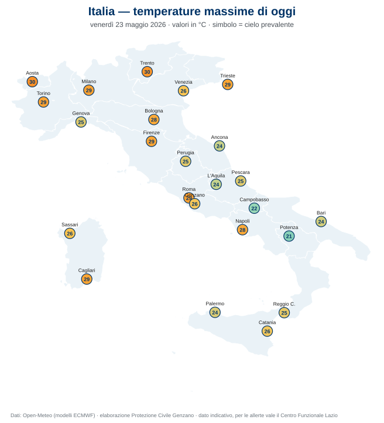

⚠️ Pagina temporanea di valutazione (non indicizzata, non nel menu). Serve solo a farti vedere come si comportano le opzioni. Verrà rimossa dopo la scelta. I dati sono di oggi (23 maggio 2026) a titolo di esempio.
Stessa elaborazione nostra (Open-Meteo / ECMWF), ma per area colorata invece che a pallini: le 5 province del Lazio dipinte col colore della temperatura, una sola etichetta per provincia, Genzano segnata con la stella. È lo stile classico della "cartina meteo": più dettagliato a colpo d'occhio (vedi subito dove fa più caldo) e per niente affollato.

Risolve il problema dei "troppi dati attaccati": nei Castelli Romani decine di paesi sono a pochi km l'uno dall'altro e a pallini si sovrappongono. Per il dettaglio del nostro paese c'è il riquadro Genzano qui sotto. Lazio (colori) + riquadro Genzano insieme = visione d'insieme pulita + precisione locale.
Generata da noi ogni giorno da Open-Meteo (modelli ECMWF), auto-ospitata come immagine SVG (nitida e leggera). Licenza pulita (CC-BY), nessun cookie di terzi.

È una nostra elaborazione: va accompagnata dalla nota "dato indicativo; per le allerte fa fede il Centro Funzionale Lazio".
Più "in missione" per un Gruppo comunale. Stessa fonte aperta, ma focalizzato sul nostro territorio: oggi + prossimi giorni.
Questo si può rendere come riquadro (qui sopra, in HTML) aggiornato ogni giorno, da mettere su /allerte-meteo/ o in homepage. Leggero, niente cookie di terzi.
Le mappe ufficiali di temperatura/tempo (es. meteoam.it dell'Aeronautica Militare) sono protette da copyright: non possiamo ri-ospitarle sul nostro sito senza autorizzazione. Quindi "A" si riduce a un link alla mappa ufficiale (come già facciamo in Strumenti), oppure all'incorporamento del loro widget (ma carica cookie di terzi, contro la nostra linea privacy). Il DPC pubblica mappe di vigilanza/criticità (riutilizzabili, PA) ma non sono mappe di temperatura.
In sintesi: la cartina sul nostro sito è realistica solo con l'opzione B (mappa nazionale nostra) o con il dettaglio Genzano. L'ufficiale "A" resta come link di fonte.